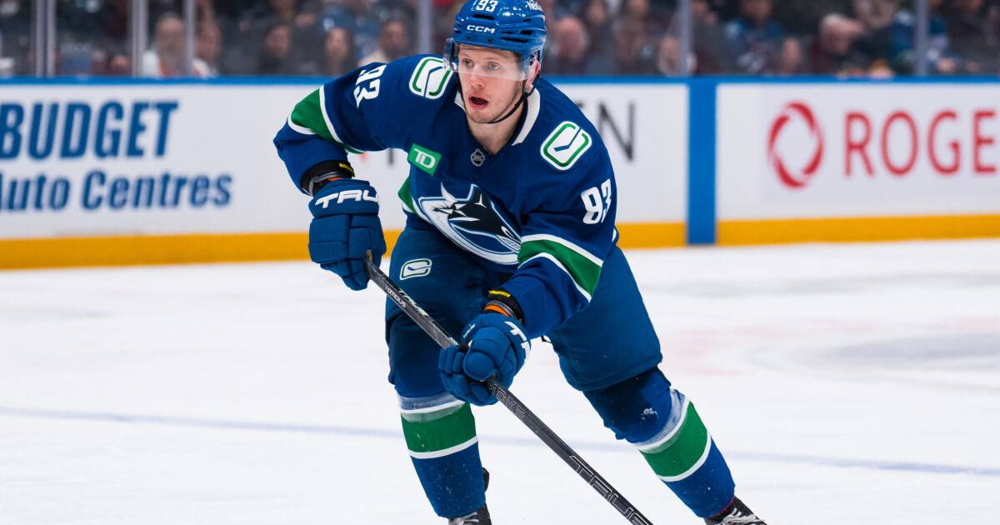

Rossi burns his old team twice in Canucks shootout win
Marco Rossi scored twice against his former club — ending a 20-game goal drought — including the tying goal with 1:23 left, as the Canucks stunned the league-leading Wild 4-3 in a shootout.

Disclosure: this post contains affiliate links. I earn a commission on qualifying purchases.
Marco Rossi picked the perfect night to find his scoring touch again. The Vancouver center scored twice against Minnesota, his former club, including the tying goal with 1:23 left in the third period, and Jake DeBrusk scored the shootout winner as the Canucks stunned the Wild 4-3 on Saturday night at Rogers Arena.
It was a revenge game in the truest sense. Rossi and defenseman Zeev Buium both came to Vancouver from Minnesota in the blockbuster trade that sent captain Quinn Hughes to the Wild last December, and both of them scored against their old team on Saturday. Buium opened his account for the season; Rossi ended a drought that had stretched across a fifth of the schedule.
How it played out
The first period was scoreless, and Minnesota struck first in the second. Matt Boldy put the Wild ahead at 8:58 on a feed from Kirill Kaprizov, but Rossi answered on the power play at 13:13, deflecting a hard Filip Hronek pass past Jesper Wallstedt from the left slot.
The lead lasted barely a minute. Kaprizov circled behind the net and tried to center the puck; it deflected off Canucks defenseman Luke Schenn's skate and landed right on Jared Spurgeon's stick for a 2-1 Wild lead at 14:25.
Buium tied it 30 seconds into the third, his point shot bouncing off Kaprizov's stick and beating a screened Wallstedt. The game stayed deadlocked until the final two minutes, when Nick Foligno put Minnesota ahead 3-2 at 18:02 on a wrist shot from the right circle.
Vancouver pulled goaltender Leevi Merilainen for the extra attacker, and 35 seconds later the game was tied again. Brock Boeser's wrist shot from the left circle deflected off the skate of Wild defenseman Brock Faber through the crease to Rossi, who buried his second of the night to force overtime.
Neither team scored in the extra frame — Merilainen robbed Boldy with a sliding left-pad save 44 seconds in — and DeBrusk was the lone scorer in the shootout, beating Wallstedt over the blocker in the second round. Merilainen stopped all three Wild shooters after making 22 saves in regulation and overtime.
The drought is over
The two goals carried extra weight because of how long Rossi had gone without one. The double snapped a 20-game goalless stretch in which he had managed only three assists, and his last goal before Saturday had come on October 1 against Edmonton.
Rossi was the ninth overall pick by Minnesota in the 2020 draft, and he spent the first years of his career with the Wild before the Hughes deal moved him to Vancouver on December 12, 2025. He arrived as the centerpiece of the return for a franchise defenseman, and nights like this are exactly what the Canucks traded for — a former Wild first-rounder deciding a game against the team that drafted him.
What it means
The result snapped Minnesota's five-game winning streak, though the Wild still left Vancouver with a point and have now collected points in 14 straight games. Kaprizov added two assists of his own, extending his point streak to 14 games and tying the Minnesota franchise record he set in 2022.
For Vancouver, the upset was a third win in four games after a brutal stretch in which the club won just once in 18. Boeser assisted on all three regulation goals and stretched his point streak to a career-high 10 games. The season series between the two clubs is now tied at one win apiece.
Watch
Source: Wild vs. Canucks | NHL Highlights | Nov 21, 2026 (NHL) — the official full-game highlights, including both of Rossi's goals against his former club, Buium's tally, and DeBrusk's shootout winner.
Gear up: Canucks and Wild jerseys and fan gear: via Fanatics